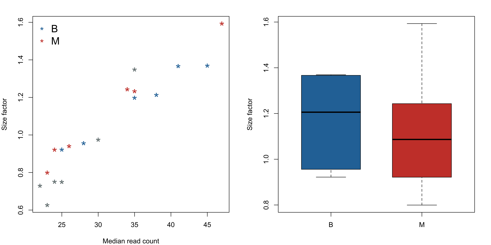
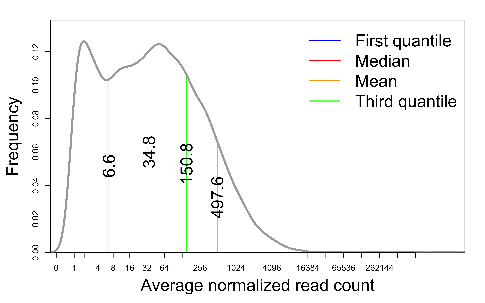
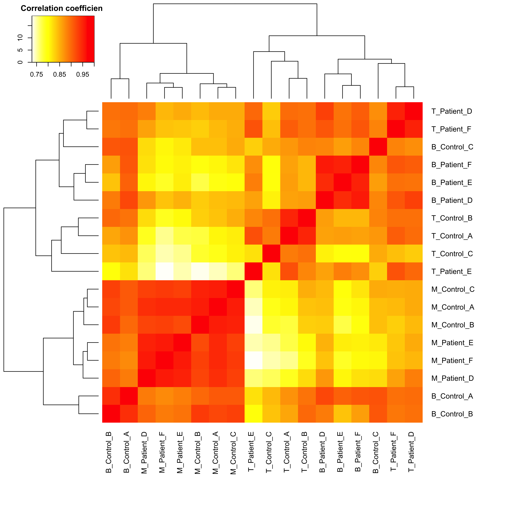
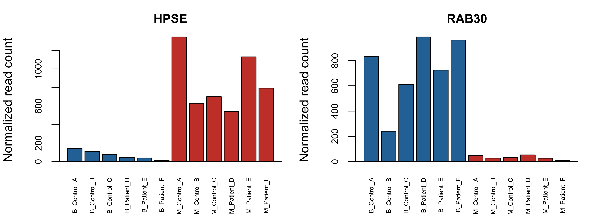
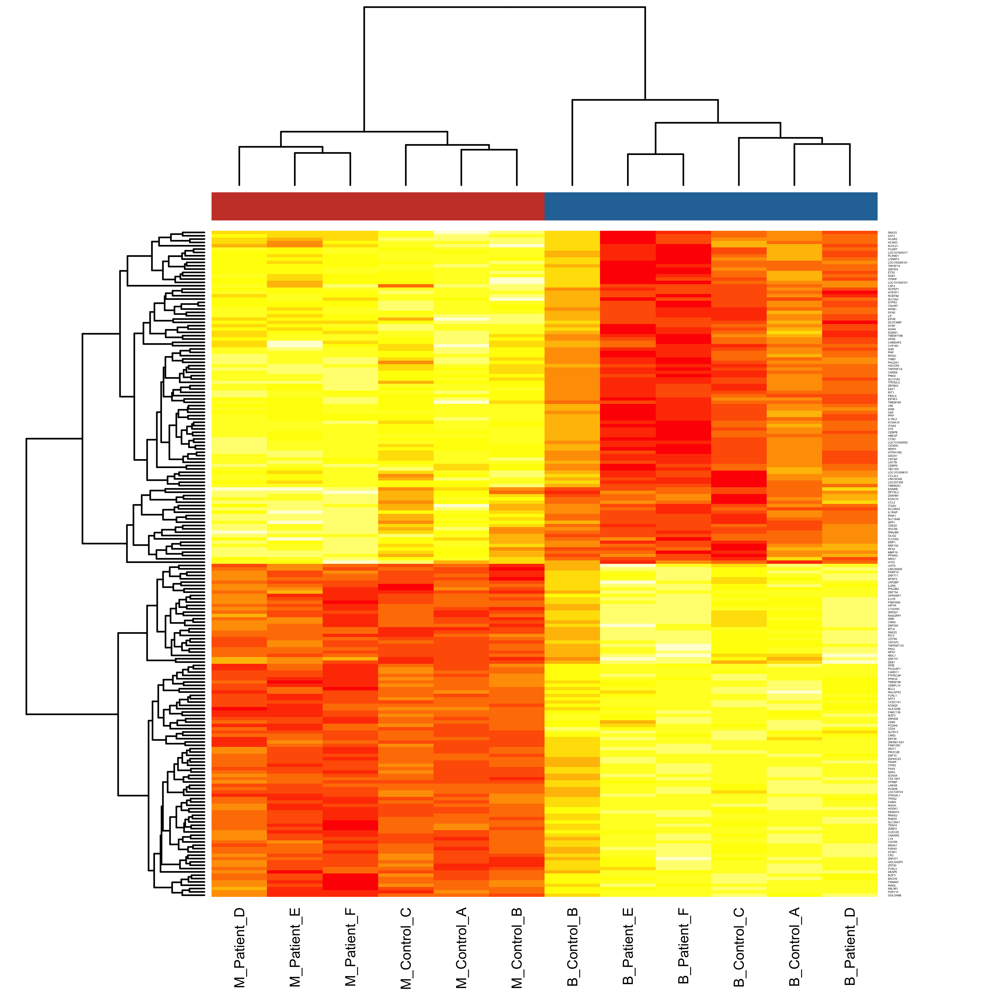

Differential gene expression using DESeq2
Zhe Zhang
2021-08-16
This procedure uses the DESeq2 package to analyze RNA-seq read count data, or similar integer matrix, with a multi-factor design. Therefore, it allows for testing differential expression between two conditions while there are confounding variables. It takes an integer matrix of gene-level read counts, normalizes it across samples, compare their gene expression profiles, and run DESeq2 to test differential expression.
1 Description
1.1 Project
Transcriptome in immune cells of control-patient samples
1.2 Data
Rna-seq data was generated from of 3 types of immune cells of 3 controls and 3 patients. Raw data was processed to get gene-level read counts.
2 Analysis and results
- Total number of samples: 18
- Total number of genes: 25207
- Number of genes after filtering: 16175
- Minimum number of total read:
- Comparison:
- Condition: Cell
- Group0: B (N0=6: B_Control_A, B_Control_B, B_Control_C, B_Patient_D, B_Patient_E, B_Patient_F)
- Group1: M (N1=6: M_Control_A, M_Control_B, M_Control_C, M_Patient_D, M_Patient_E, M_Patient_F)
2.1 Read count summary
The read count matrix includes 18 samples and 16175 genes after removing genes with total read counts few than . The global average of read count per gene is 547.8 and the overall percentage of non-zero read counts is 92.28%.
Table 1. Summary statistics of read counts per sample: quantiles of read count per gene, average read count per gene, and percentage of non-zero read counts.
| Cell | Donor | Min. | 1st Qu. | Median | Mean | 3rd Qu. | Max. | Total | Positive% | |
|---|---|---|---|---|---|---|---|---|---|---|
| B_Control_A | B | A | 0 | 8 | 41 | 630.07 | 184.0 | 4406443 | 10191351 | 95.96 |
| B_Control_B | B | B | 0 | 7 | 38 | 534.54 | 165.0 | 3709630 | 8646253 | 96.13 |
| B_Control_C | B | C | 0 | 8 | 45 | 474.61 | 185.0 | 2430985 | 7676738 | 92.84 |
| B_Patient_D | B | D | 0 | 5 | 28 | 528.77 | 127.0 | 4536479 | 8552878 | 93.36 |
| B_Patient_E | B | E | 0 | 6 | 35 | 452.63 | 149.0 | 3364661 | 7321246 | 92.77 |
| B_Patient_F | B | F | 0 | 4 | 25 | 557.36 | 120.0 | 4738669 | 9015353 | 91.44 |
| M_Control_A | M | A | 0 | 5 | 34 | 682.18 | 181.0 | 3946922 | 11034214 | 92.87 |
| M_Control_B | M | B | 0 | 5 | 35 | 764.93 | 178.5 | 4919120 | 12372760 | 92.06 |
| M_Control_C | M | C | 0 | 8 | 47 | 594.60 | 221.0 | 2947211 | 9617718 | 95.13 |
| M_Patient_D | M | D | 0 | 4 | 23 | 462.40 | 115.0 | 3147782 | 7479253 | 90.87 |
| M_Patient_E | M | E | 0 | 3 | 24 | 464.88 | 136.0 | 2583880 | 7519383 | 89.45 |
| M_Patient_F | M | F | 0 | 4 | 26 | 528.82 | 137.0 | 3261629 | 8553737 | 91.07 |
2.2 Normalization
2.2.1 Size factor
DESeq2 uses the median ratio to estimate a size (normalization) effect for each sample in an RNA-seq data set. Size effects are positively correlated to total read counts of samples. Therefore, a simple normalization method is to divide all read counts of each sample by its size factor.
The size factors of all samples range between 0.627 and 1.593 (geometric mean = 1.018). In general, we expect a positive correlation between total read count of a sample and its size factor, and their geometric mean is close to 1.0.

Figure 1. Left: correlation between median read count per gene and size factor across all samples. Right: the distribution of size factors by groups. Average size effects of the 2 groups are 1.17 vs. 1.12 (p=0.7391).
2.2.2 Before vs. after normalization
After dividing the original read counts of each sample by its size factor, normalized read counts are log2-transformed (log2(c+1)). Data before and after normalization is compared in terms of their correlation, distribution, and variance across samples.
Figure 2. Gene-level read count of two samples with the smallest (T_Control_C) and the largest (M_Control_C) size factors.
Figure 3. Distribution of read counts before and after normalization with size factors. Read counts were log2-transformed.
2.2.3 Data distribution

Figure 4. Distribution of averaged gene-level read counts after normalization by size factors. The averages often have a bi-modal (two-peak) distribution. The narrow left peak corresponds to inactive genes with lower read counts and the wider right peak corresponds to active genes expressed at different levels.
2.3 Sample analysis
Analysis of samples by comparing their global gene expression profiles, potentially to identify outlier samples and confounding variables.
2.3.1 Hierarchical clustering

Figure 5. Unsupervised hierarchical clustering of samples based on their pairwise correlation of all genes (normalzied and log2-transformed). The lowest common node of two samples on the clustering tree represents their similarity (lower = more similar). Colors in the heatmap correspond to the correlation coefficient of a pair of samples.
2.3.2 Principal components analysis

Figure 6. Principal Components Analysis (PCA) is also an unsupervised analysis that converts a large number of correlated variables (genes) into a smaller set of uncorrelated variables called principal components (PCs). Each principal component accounts for certain percentage of total variance in a data set and the PCs are ordered by their percentages. This figure plots the top two PCs. Generally speaking, samples closer to each other on the 2-D space have more similar profiles of gene expression.
2.4 Differential gene expression
The analysis of differential gene expression reports a statistical table with 6 columns:
- Column 1/2 - Group means: Group averages of normalized read counts (B vs. M).
- Column 3 - Mean_Change: Difference of group means (Mean1 - Mean0).
- Column 4 - Log2FC: Log2 ratio of group means (Log2(Mean1/Mean0)); adjusted by shrinkage esimator.
- Column 5 - Pvalue: Statistical significance of group difference, calculated by a negative binomial (Wald) test.
- Column 6 - FDR: Adjusted p value known as false discovery rate, calculated by the Benjamini & Hochberg method.
2.4.1 DEG summary

Figure 7. Visualizations that summarize the differential expression of all 16175 genes.
- M-A Plot This plot visualizes the relationship between average read counts on X-axis (A) and Log2 fold change on Y-axis (M). Each dot represents a gene. The red line is the LOWESS local smoothing fit, which indicates whether there is an overall pattern of skewed differential expression across the spectrum of gene expression levels.
- Volcano Plot This plot puts together two types of differential expression statistics: Log2 fold change (size effect) and P value (statistical significance). Log2 fold change indicates magnitude of differential expression and p value indicates the consistency of change across multiple samples. Selection of differentially expressed genes usually needs to take both into account. Each dot represents a gene and its size is proportional to its distance from [0, 1]. The horizontal line corresponds to p=0.01 and the vertical lines correspond to 2.0 fold increase/decrease.
- P Value Distribution This plot shows the counts of genes whose DESeq2 p values falling into each 1% interval. The first bar on the left then indicates the number of genes with p<0.01. When the data is completely random with enough samples, the number of genes in each 1% interval will be approximately the same (uniform distribution). The genes with significant p values would be considered as false positives if this is the case. A distribution skewed to the left suggests there are indeed differentially expressed genes (true positives).
- False discovery rate This plots traces the number of selected genes with each FDR (false discovery rate) cutoff.
Table 2. Number of top DEGs selected via different FDR cutoffs. FDRs are calculated using the Benjamini & Hochberg method (Controlling the false discovery rate: a practical and powerful approach to multiple testing. Journal of the Royal Statistical Society Series B 57, 289–300. 1995). A FDR of 0.15 to 0.25 (15% to 25% false positives) is acceptable for most follow-up analyses, while validation of differential expression via other technologies, such as qPCR, is highly recommended.
| FDR | Higher_in_M | Lower_in_M | Total |
|---|---|---|---|
| 0.01 | 2896 | 2754 | 5650 |
| 0.02 | 3234 | 3132 | 6366 |
| 0.05 | 3685 | 3727 | 7412 |
| 0.10 | 4131 | 4297 | 8428 |
| 0.15 | 4425 | 4725 | 9150 |
| 0.20 | 4708 | 5039 | 9747 |
| 0.25 | 4937 | 5361 | 10298 |
2.4.2 Top genes

Figure 8. The top-ranked gene with the most up- (left) and down- (right) regulated expression in M.

Figure 9. Heatmap of the top 100 and 100 DEGs with the most up- (red) and down- (yellow) regulated expression in M. Each row corresponds a DEG and the colors represent its replative expression levels across samples. Samples are clustered by the genes and the columns are colored according to sample groups (blue=B and red=M).
3 Data access
3.1 Browse online
Differential gene expression:
Principal components analysis
4 Appendix
Check out the RoCA home page for more information.
4.1 Fold change vs. log2(fold change)
The terms to represent differential expression can be used quite confusingly. In this report, fold change refers the ratio of two group means in their unlogged form. So a fold change of 2.0 means the average of the second group is increased to twice of the average of the first group; similarly, a fold change of 0.5 means the average is reduced to half. Log2(fold change) equals to the log2-transformation of the fold change. The table below gives a few examples of the conversion of these 2 variables. Log2(fold change) is more suitable for statistical analysis since it is symmetric around 0.
Supplemental Table 1. Fold Change vs. Log(Fold Change) vs. Percentage Change
| Fold change | Log2(fold change) | Percentage change (%) |
|---|---|---|
| 0.125 | -3.000 | -87.500 |
| 0.250 | -2.000 | -75.000 |
| 0.500 | -1.000 | -50.000 |
| 0.667 | -0.585 | -33.333 |
| 0.800 | -0.322 | -20.000 |
| 1.000 | 0.000 | 0.000 |
| 1.250 | 0.322 | 25.000 |
| 1.500 | 0.585 | 50.000 |
| 2.000 | 1.000 | 100.000 |
| 4.000 | 2.000 | 300.000 |
| 8.000 | 3.000 | 700.000 |
4.2 References
- R: R Development Core Team, 2011. R: A Language and Environment for Statistical Computing. ISBN 3-900051-07-0. Home page.
- Bioconductor: Gentleman RC et al., 2004. Bioconductor: open software development for computational biology and bioinformatics. Genome Biology. Home page.
- DESeq2: Love MI, Huber W, Anders S (2014). Moderated estimation of fold change and dispersion for RNA-seq data with DESeq2. Genome Biology, 15, 550.
- RoCA
- Awsomics
4.3 Reproduce this report
To reproduce this report:
Find the data analysis template you want to use and an example of its pairing YAML file here and download the YAML example to your working directory
To generate a new report using your own input data and parameter, edit the following items in the YAML file:
- output : where you want to put the output files
- home : the URL if you have a home page for your project
- analyst : your name
- description : background information about your project, analysis, etc.
- input : where are your input data, read instruction for preparing them
- parameter : parameters for this analysis; read instruction about how to prepare input data
Run the code below within R Console or RStudio, preferablly with a new R session:
if (!require(devtools)) { install.packages('devtools'); require(devtools); }
if (!require(RCurl)) { install.packages('RCurl'); require(RCurl); }
if (!require(RoCA)) { install_github('zhezhangsh/RoCAR'); require(RoCA); }
CreateReport(filename.yaml); # filename.yaml is the YAML file you just downloaded and edited for your analysisIf there is no complaint, go to the output folder and open the index.html file to view report.
4.4 Session information
## R version 3.5.1 (2018-07-02)
## Platform: x86_64-apple-darwin15.6.0 (64-bit)
## Running under: macOS High Sierra 10.13.6
##
## Matrix products: default
## BLAS: /System/Library/Frameworks/Accelerate.framework/Versions/A/Frameworks/vecLib.framework/Versions/A/libBLAS.dylib
## LAPACK: /Library/Frameworks/R.framework/Versions/3.5/Resources/lib/libRlapack.dylib
##
## locale:
## [1] en_US.UTF-8/en_US.UTF-8/en_US.UTF-8/C/en_US.UTF-8/en_US.UTF-8
##
## attached base packages:
## [1] parallel stats4 stats graphics grDevices utils datasets
## [8] methods base
##
## other attached packages:
## [1] xlsx_0.6.1 DEGandMore_0.0.0.9000
## [3] snow_0.4-3 DESeq2_1.22.1
## [5] SummarizedExperiment_1.12.0 DelayedArray_0.8.0
## [7] BiocParallel_1.16.2 matrixStats_0.54.0
## [9] Biobase_2.42.0 GenomicRanges_1.34.0
## [11] GenomeInfoDb_1.18.1 IRanges_2.16.0
## [13] S4Vectors_0.20.1 BiocGenerics_0.28.0
## [15] rchive_0.0.0.9000 colorspace_1.4-1
## [17] gplots_3.0.1 MASS_7.3-51.1
## [19] htmlwidgets_1.5.1 DT_0.15
## [21] kableExtra_0.9.0 awsomics_0.0.0.9000
## [23] yaml_2.2.1 rmarkdown_1.10
## [25] knitr_1.20 RoCA_0.0.0.9000
## [27] RCurl_1.95-4.11 bitops_1.0-6
## [29] devtools_2.3.1 usethis_1.6.1
##
## loaded via a namespace (and not attached):
## [1] ellipsis_0.3.0 rprojroot_1.3-2 htmlTable_1.12
## [4] XVector_0.22.0 base64enc_0.1-3 fs_1.3.2
## [7] rstudioapi_0.11 remotes_2.2.0 bit64_0.9-7
## [10] AnnotationDbi_1.44.0 fansi_0.4.1 xml2_1.2.0
## [13] splines_3.5.1 geneplotter_1.60.0 pkgload_1.0.2
## [16] jsonlite_1.6.1 Formula_1.2-3 rJava_0.9-11
## [19] annotate_1.60.0 cluster_2.0.7-1 readr_1.3.1
## [22] compiler_3.5.1 httr_1.4.2 backports_1.1.5
## [25] assertthat_0.2.1 Matrix_1.2-15 cli_2.0.2
## [28] acepack_1.4.1 htmltools_0.4.0 prettyunits_1.1.1
## [31] tools_3.5.1 gtable_0.3.0 glue_1.3.2
## [34] GenomeInfoDbData_1.2.0 dplyr_0.8.5 Rcpp_1.0.5
## [37] vctrs_0.2.4 gdata_2.18.0 crosstalk_1.1.0.1
## [40] stringr_1.3.1 xlsxjars_0.6.1 ps_1.3.2
## [43] testthat_2.3.2 rvest_0.3.2 lifecycle_0.2.0
## [46] gtools_3.8.1 XML_3.98-1.16 zlibbioc_1.28.0
## [49] scales_1.1.1 hms_0.4.2 RColorBrewer_1.1-2
## [52] memoise_1.1.0 gridExtra_2.3 ggplot2_3.3.2
## [55] rpart_4.1-13 latticeExtra_0.6-28 stringi_1.2.4
## [58] RSQLite_2.1.1 highr_0.7 genefilter_1.64.0
## [61] desc_1.2.0 checkmate_1.8.5 caTools_1.17.1.1
## [64] pkgbuild_1.1.0 rlang_0.4.5 pkgconfig_2.0.3
## [67] evaluate_0.14 lattice_0.20-38 purrr_0.3.3
## [70] bit_1.1-14 processx_3.4.2 tidyselect_1.0.0
## [73] magrittr_1.5 R6_2.4.1 Hmisc_4.1-1
## [76] DBI_1.0.0 pillar_1.4.6 foreign_0.8-71
## [79] withr_2.2.0 survival_2.43-3 nnet_7.3-12
## [82] tibble_2.1.3 crayon_1.3.4 KernSmooth_2.23-15
## [85] locfit_1.5-9.1 grid_3.5.1 data.table_1.12.8
## [88] blob_1.2.1 callr_3.4.3 digest_0.6.25
## [91] xtable_1.8-3 munsell_0.5.0 viridisLite_0.3.0
## [94] sessioninfo_1.1.1END OF DOCUMENT